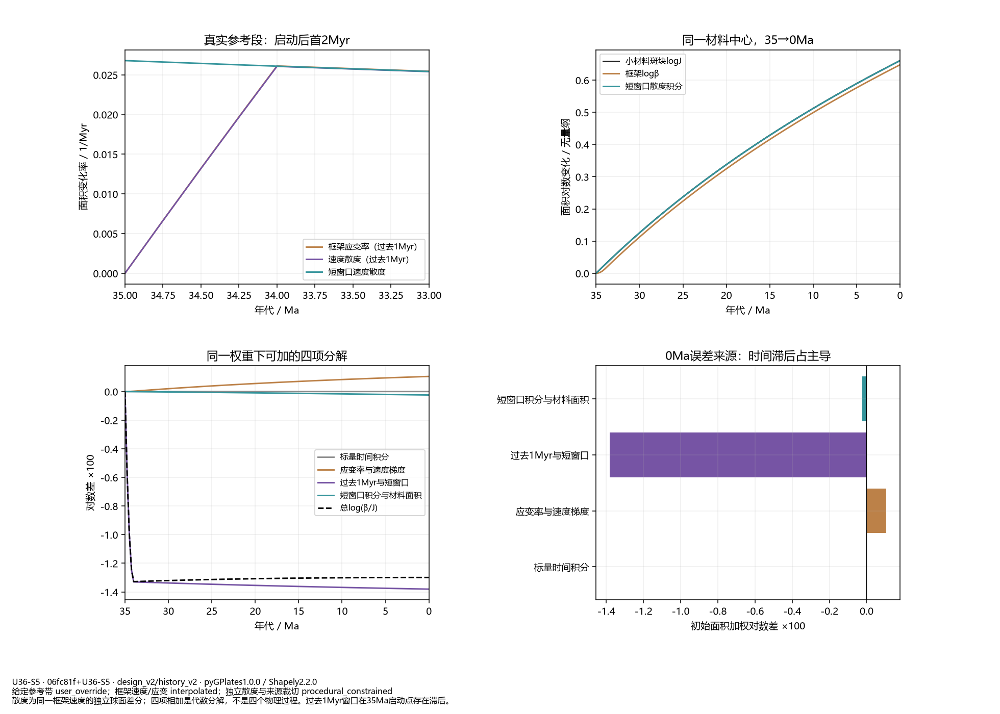
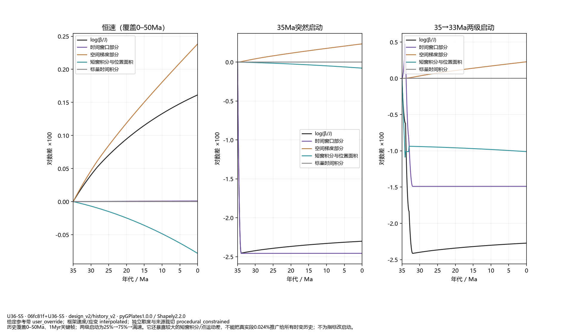
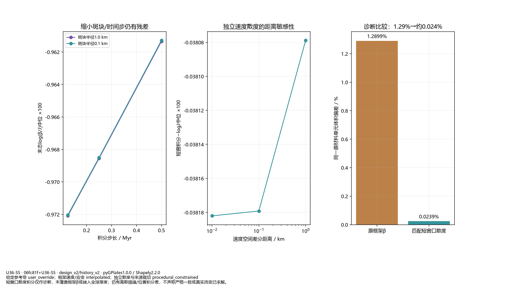
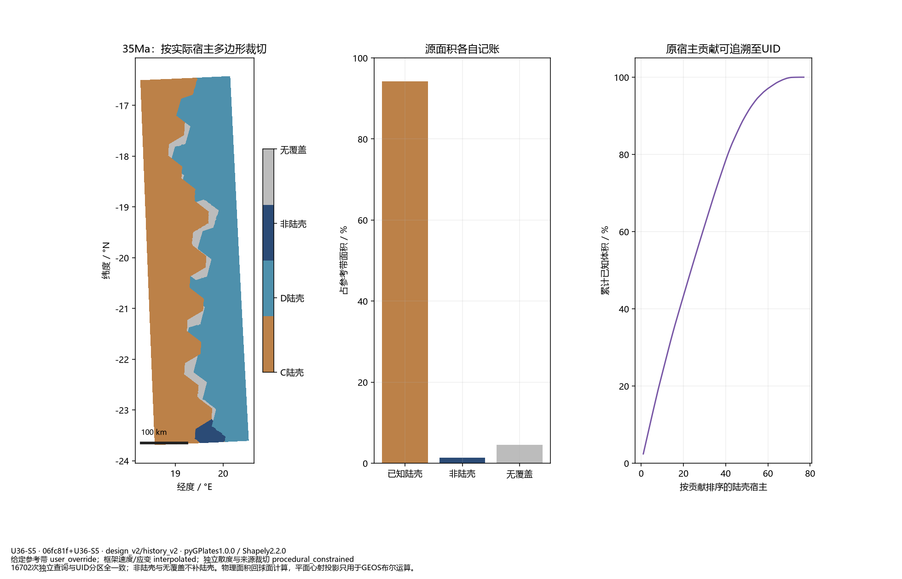
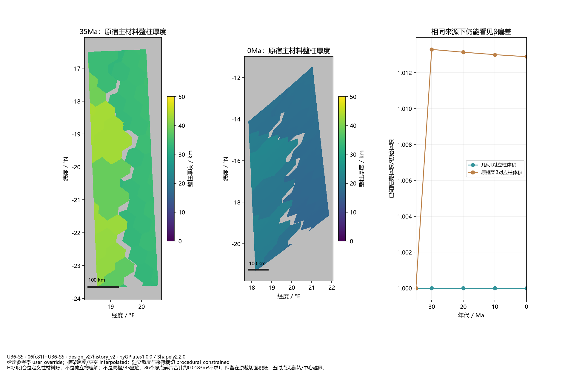

同轨迹分解和实际来源裁切；没有新全球地形或B5盆底。

散度为同一框架速度的独立球面差分；四项相加是代数分解，不是四个物理过程。过去1Myr窗口在35Ma启动点存在滞后。

历史覆盖0–50Ma、1Myr关键帧；两级启动为25%→75%→满速。它还暴露较大的短窗积分/点运动差，不能把真实段0.024%推广给所有时变历史；不为指标改启动。

短窗口散度积分仅作诊断，未覆盖框架β或接入全球厚度；仍有离散插值/位置积分差，不声称严格一致或真实流变已求解。

16702次独立查询与UID分区全一致；非陆壳与无覆盖不补陆壳。物理面积回球面计算，平面心射投影只用于GEOS布尔运算。

H0/J闭合是定义性材料账，不是独立物理解；不是高程/B5盆底。86个浮点碎片合计约0.0183m²不求J，保留在原裁切面积账；五时点无翻转/中心越界。